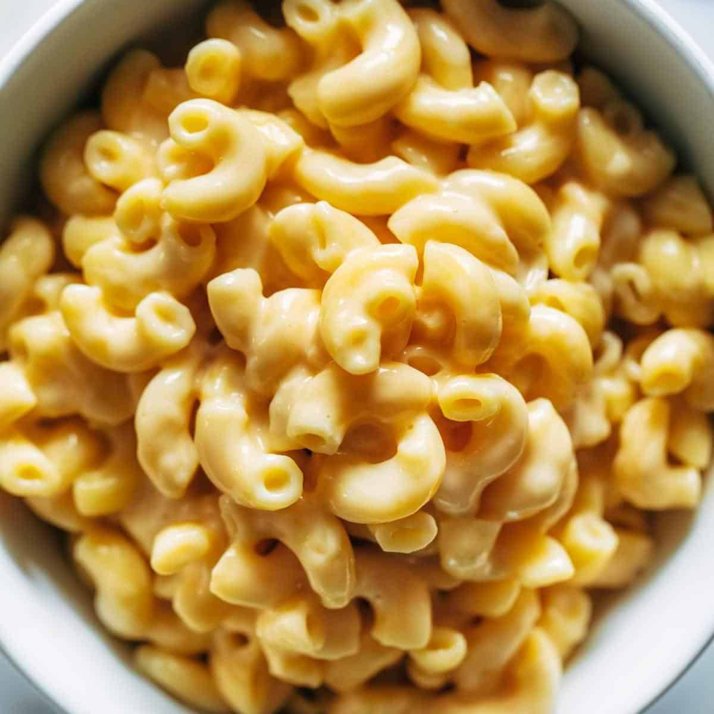
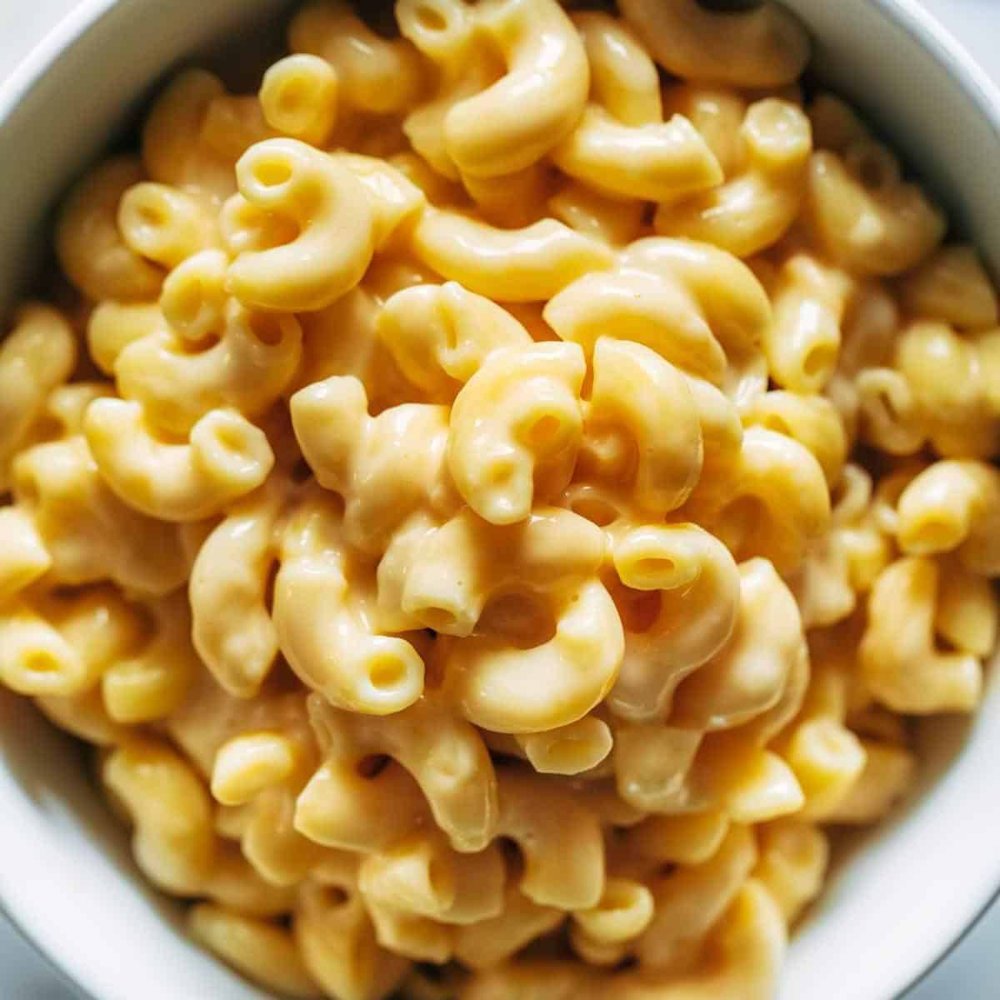
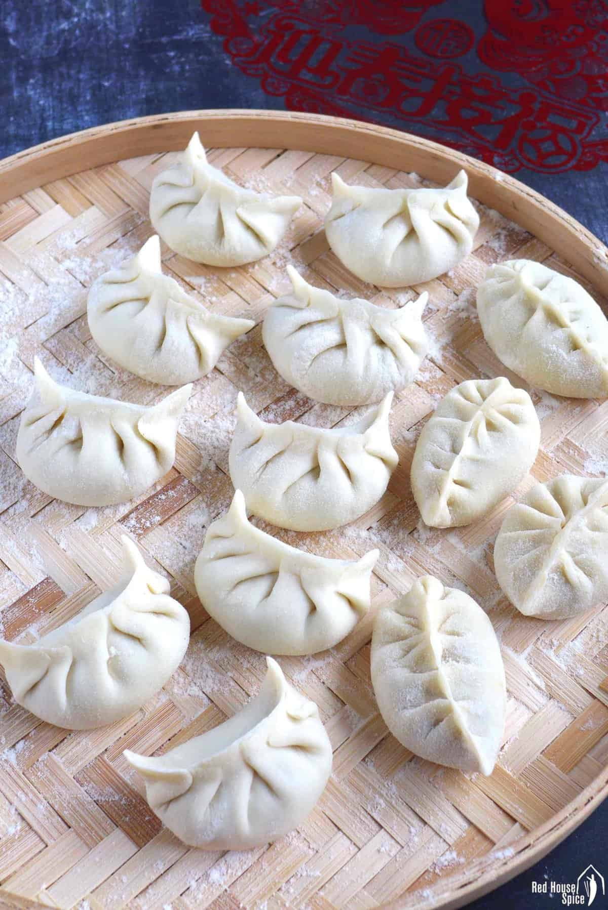
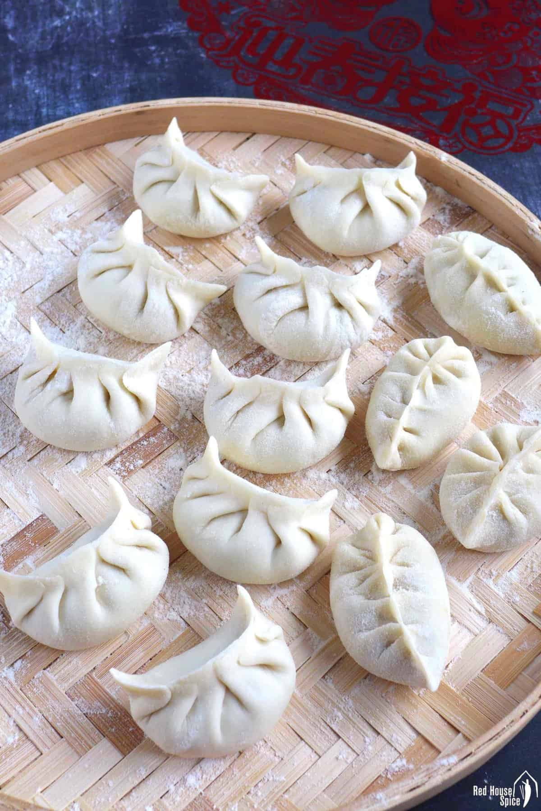

Recipes
Coca-Cola Chicken Wings
China
Family Recipe
Main Dish

I learnt how to cook Coca-Cola chicken wings from my mother, and I've since tweaked her recipe to better suit my family's palate, making it less sweet. While the cooking process remains straightforward, the result is incredibly flavorful, and once you've tried it, you'll understand its delicious appeal!
Recipe Ingredients
- Chicken wings
- Scallions
- Ginger slices
- Cooking wine
- Dark soy sauce
- A can of coke
Recipe Steps
- Wash and place chicken wings in a bowl
- Add scallions, ginger slices, cooking wine, dark soy sauce and salt to the washed chicken wings, and mix them well
- Cover the bowl with plastic wrap and marinate the chicken wings for 1 hour
- Put the right amount of oil in the pot, and put the marinated chicken wings into the pot and fry it until golden brown on both sides
- After fry the chicken wings until golden brown on both sides, then pour a can of coke into the pan and bring to a boil
- Continue to cook for an additional 2-3 minutes until the glaze has thickened and coats the wings nicely
- Transfer the Coca-Cola glazed chicken wings to a serving platter
Additional Food Images


Homemade Mac & Cheese
Northern Europe
Delish
Main Dish

Macaroni and cheese, commonly known as mac & cheese, is a comfort food staple that has captured the hearts of people all over the world. Originating from Europe and popularized in the United States, this dish consists of elbow macaroni pasta smothered in a creamy cheese sauce. The simplicity of its ingredients—pasta, cheese, and often a touch of butter or milk—belies a rich, complex flavor that has made it a favorite for both quick weeknight dinners and festive holiday gatherings.
Recipe Ingredients
- Macaroni
- Butter and flour
- Milk
- Cheese
- Seasonings
- Bread crumbs
Recipe Steps
- Preheat oven to 375°. Grease a 13"x9" baking dish with butter. In a large pot of boiling salted water, cook macaroni, stirring occasionally, until al dente, 5 to 6 minutes. Drain.
- In a large saucepan over medium heat, melt 1 stick butter. Sprinkle flour over and cook, stirring, until slightly golden, 2 to 3 minutes. Pour in milk and whisk until combined. Add mustard powder; season with salt and pepper. Bring to a simmer over medium-high heat and cook, stirring, until sauce starts to thicken, about 2 minutes.
- Remove pan from heat and whisk in cheddar, Gruyère, and 1 cup Parmesan until melted and smooth. Stir in macaroni and transfer to the prepared dish.
- In a small bowl, combine panko, oil, and remaining 1/2 cup Parmesan. Sprinkle over macaroni; season with more pepper.
- Bake mac and cheese until bubbly and golden, 25 to 30 minutes. Let cool for 10 minutes.
Additional Food Images
 


Jiaozi
China
Flour, Pork, and Cabbage
Main Dish

Chinese dumplings (Jiaozi, 饺子) are stuffed parcels made of unleavened dough and savory fillings consisting of minced ingredients like meat, egg, tofu, or vegetables. They can be boiled, pan-fried or steamed.
Recipe Ingredients
- Flour
- Water
- Pork
- Cabbage
Recipe Steps
- Dough
- Filling
- Folding
- Cooking
- Dipping Sauces
Additional Food Images
 


BLAT Sandwich
American
My recipe
Main

A BLAT sandwich is a delicious twist on the classic BLT, featuring crispy bacon, fresh lettuce, ripe tomatoes, and creamy avocado, all sandwiched between slices of bread for a satisfying blend of flavors and textures.
Recipe Ingredients
- Avocado
- Bacon
- Lettuce
- Tomato
- Bread
- Mayo
Recipe Steps
- Toasted bread slice spread with mayo
- Put sliced avocado, bacons, sliced tomatoes, lettuce on one spread of bread
- Put the other slice of bread at the top
Additional Food Images


Guacamole
Mexican
My recipe
Appetizer

Guacamole is a Mexican dip made from mashed avocados, tomatoes, onions, cilantro, lime juice, and chili pepper, creating a creamy, zesty, and versatile condiment often enjoyed with tortilla chips, tacos, and more.
Recipe Ingredients
- Avocado
- Lime
- Salt
- Onion
- Tomato
- Cilantro
Recipe Steps
- Slice three ripe avocados in half
- Scoop them into a mixing bowl
- Use a fork to gently mash them
- Add the onions, tomatoes, cilantro, jalapeno pepper, garlic, lime juice and salt and stir everything together.
Additional Food Images